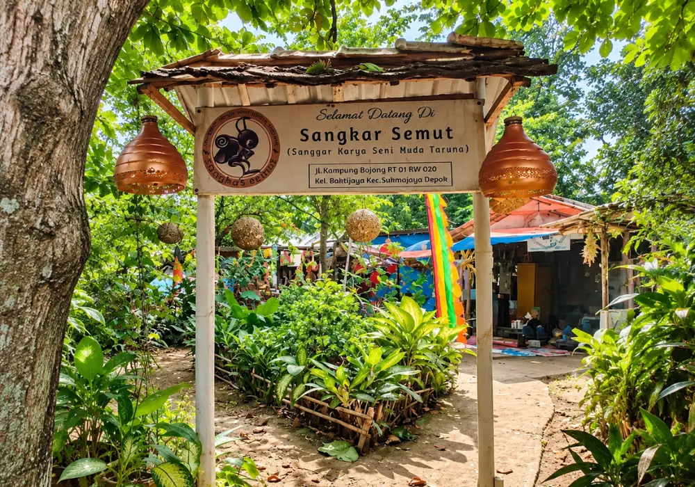
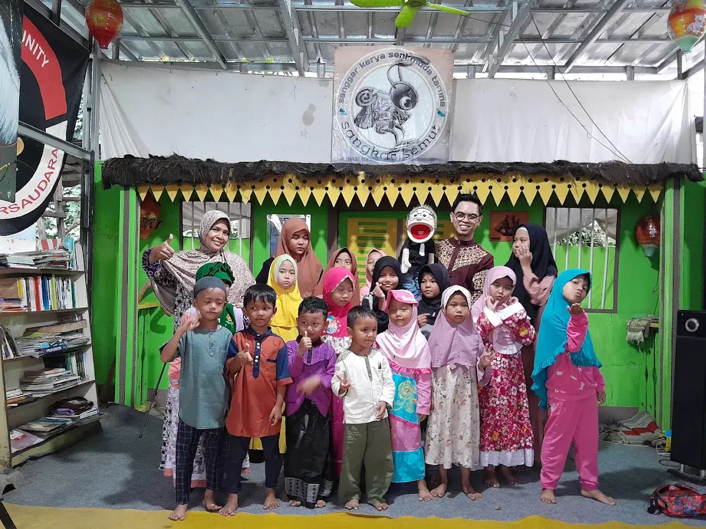

Komunitas Kreatif • Kota Depok
Sangkar Semut
Sanggar Karya Seni Muda Taruna

Ruang bagi anak-anak dan generasi muda untuk berkegiatan, berkarya, dan tumbuh bersama melalui seni, literasi, kegiatan sosial, serta berbagai aktivitas komunitas.
Lihat Kegiatan
Tentang Kami
Mengenal Sangkar Semut
Sangkar Semut merupakan komunitas yang berdiri pada 5 September 2018 di Kampung Bojong, Baktijaya, Sukmajaya, Kota Depok.
Kehadirannya berawal dari upaya untuk mewadahi generasi muda melalui berbagai kegiatan positif. Seiring perkembangannya, Sangkar Semut menjalankan kegiatan di bidang seni dan budaya, literasi, sosial, keterampilan, keagamaan, serta lingkungan.
Sekilas
Informasi Singkat
2018
Berdiri sejak 5 September 2018
Depok
Baktijaya, Sukmajaya, Kota Depok
6 Bidang
Seni & Budaya, Literasi, Sosial, Keterampilan, Keagamaan, dan Lingkungan
Temukan Kami
Lokasi & Kontak
Lokasi
Kampung Bojong, RT 001/RW 020, Kelurahan Baktijaya, Kecamatan Sukmajaya, Kota Depok.